Self-improving meshing agents: talk figures
Every number recomputed from the raw runs. Click a figure for the full-size image. Rebuild: python talk_plots/make_index.py
More pages
- Equal-budget meshes (Act 1): the key Act 1 example, Cook's membrane at an equal DOF budget, plus mesh galleries
- Self-learning figures: automesher vs early vs trained agent, solved fields on NAFEMS LE11 and Cook's membrane
- Act 3 videos: before vs after post-training, simulated crush of the printed part
- Crack prediction (Act 3): where and when each simulation predicts the first crack, vs the real part
Act 1: agentic meshing works, and training works
On the benchmark problems our agents beat the gmsh automesher by a large factor, and they get better the longer they train.
- Equal-budget meshes (Act 1): the key Act 1 example, Cook's membrane at an equal DOF budget, plus mesh galleries
- Self-learning figures: automesher vs early vs trained agent, solved fields on NAFEMS LE11 and Cook's membrane
KEY ACT 1 EXAMPLE: same DOF budget, the trained agent is 3.4x more accurate than the automesher
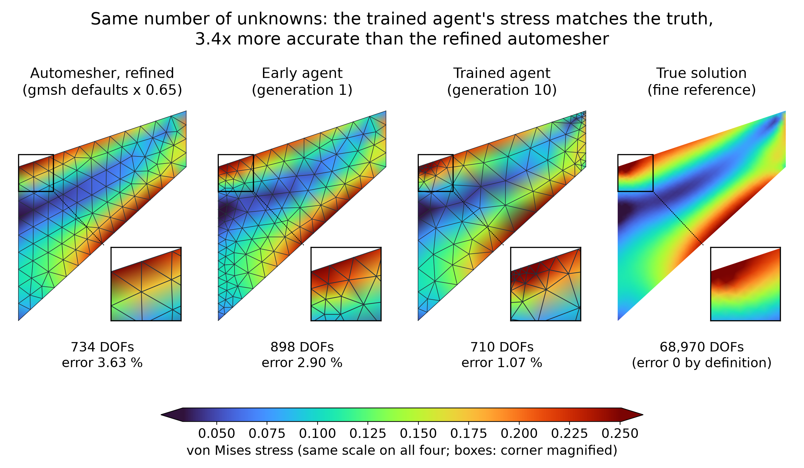
Solved von Mises stress on one colour scale (Turbo, 1st-99th percentile of the reference, as the agent dashboard). Left to right: (1) gmsh automesher with every element 0.65 x gmsh's default size, quadratic, correct setup (734 DOFs, 3.63 %; row factor 0.65 of talk_plots/act1_agentic_works/automesher_sweep.json); (2) early agent g1-cooks_membrane-a3 (ace_runs/cook_auto/gen1/runs/g1-cooks_membrane-a3.json; 898 DOFs, 2.90 %; mesh request {"h": 5, "order": 2, "refinements": [{"group": "clamped", "size": 2.5, "radius": 10}]}); (3) trained agent g10-cooks_membrane-a7 (ace_runs/deep1/gen10/runs/g10-cooks_membrane-a7.json; 710 DOFs, 1.07 %; mesh request {"h": 8.5, "order": 2, "refinements": [{"point": [0, 44], "size": 0.55, "radius": 11}, {"point": [48, 60], "size": 0.55, "radius": 9}, {"point": [48, 44], "size": 1.5, "radius": 6}, {"point": [0, 0], "size": 3, "radius": 4}, {"group": "loaded", "size": 3, "radius": 6.5}, {"point": [15, 28.5], "size": 4.2, "radius": 9.5}, {"point": [41.5, 50.5], "size": 3.6, "radius": 7}, {"point": [2.5, 32.5], "size": 3.5, "radius": 7}, {"point": [11, 16], "size": 3.8, "radius": 8.5}]}). (4) true solution. Boxes in the lower right magnify the clamped top-left corner (x 0-10, y 37-47.5), where the stress peaks. Cook's membrane (plane stress, E = 1, nu = 1/3, unit total shear load on the right edge; dimensionless stress). Error = relative energy-norm error of the whole stress field vs the fine reference (ace/field_refs/cooks_membrane.npz, 68,970 DOFs; a coarser reference solve differs from it by 0.39 %), the field error the runs were scored with. Every mesh was rebuilt and re-solved with the fixed skfem solver; re-solved errors and DOFs match the stored ones (data/cook_panels.json).
Setup check: both agents wrote the load as a traction 0.0625 on the 16-long loaded edge (= total force 1) and nu = 0.3333333; solving their meshes with ace/checks.py reference_setup gives the same field error (2.90 %, 1.07 %), so both setups are correct.
Caveats: the early agent is from a different training run (ace_runs/cook_auto) than the trained agent (ace_runs/deep1), whose own generation-0/1 agents used fewer DOFs (252-532), so they do not fit an equal-budget comparison. The early run shown has the highest field error of the 6 generation-1 runs of cook_auto (all have 772-1092 DOFs, 2.19-2.90 %; its generation 0: 6 identical runs, 772 DOFs, 2.48 %). The automesher row has 24 more DOFs than the trained agent.
Training works: the mean agent climbs 1.3x → 4.4x the automesher (Cook)
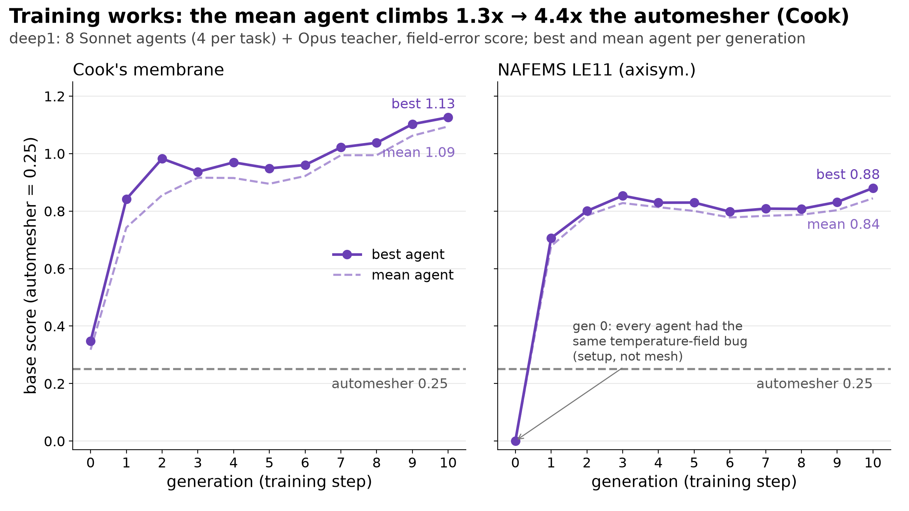
Title numbers. 1.3x = gen-0 mean 0.318 / 0.25; 4.4x = gen-10 mean 1.095 / 0.25 (the best agent's 1.126 = 4.5x is labelled on the curve).
Caption. Best and mean base score per generation in the deep loop (deep1: 8 Sonnet agents split 4 per task, Opus teacher, self-reflection, organizer). The grey dashed line is the gmsh automesher's own score, 0.25. Each generation is one training step.
Key numbers (all in act1_numbers.json)
- Cook's membrane: the mean agent goes 0.318 -> 1.095 (gen 0 -> gen 10), and the best agent goes 0.347 -> 1.126. 1.126 / 0.25 = 4.50x the automesher's score.
- Cook's accuracy gain g = e_auto / e: the gen-0 mean is 1.10; the gen-10 mean is 4.68, at a mean 2.14x the automesher's DOFs.
- Cook's best run, g10-cooks_membrane-a7: error 1.07% vs the automesher's 5.11%, so g = 4.76 at 710 / 336 = 2.11x its DOFs.
- LE11 axisymmetric: the best agent goes 0.001 -> 0.880 and the mean goes 0.001 -> 0.845. The best is 3.52x the automesher.
- On Cook the best agent dips twice (gen 2->3: 0.983 -> 0.937; gen 4->5: 0.970 -> 0.949) and otherwise rises. The mean rises in 8 of 10 steps on Cook (two small dips: gen 3->4 by 0.001, gen 4->5 by 0.020).
- Cost of the whole run: $46.37. The teacher took $30.90 of it (
ace_runs/deep1/summary.md).
Sources. ace_runs/deep1/gen*/runs/*.json -> checks.base_score, gain, rel_error, dofs, auto_error, auto_dofs (44 runs per task, none invalid).
Caveats
- The LE11 axisymmetric jump from gen 0 to gen 1 is a setup fix, not meshing. All 4 gen-0 agents wrote the temperature field as sqrt(x^2+y^2)+y instead of x+y (r+z). That gave about 30% error whatever the mesh (
gen0/teacher_nafems_le11_axisym.json). The mesh-only learning on that task is the gen 1 -> 10 rise: best agent 0.706 -> 0.880, mean 0.678 -> 0.845. - Cook is mesh-only learning: the gen-0 setups were already valid (g ≈ 1).
- 4 agents per task per generation, and one run (no seeds or repeats).
- deep1 was stopped by hand (STOP file) after generation 10.
- "Base score" leaves out the be-the-best bonus.
The deep loop learns steadily; the basic loop plateaus or drifts
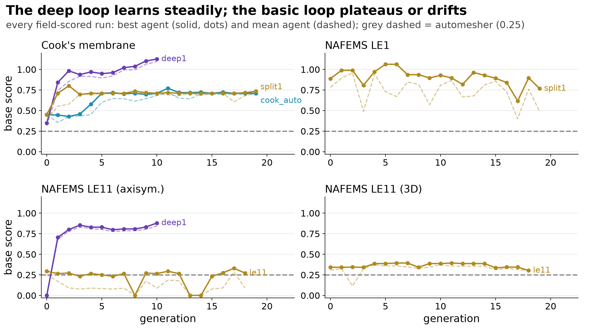
Caption. Every run scored on field error against the automesher (field mode), on every problem. Solid lines with dots are the best agent per generation. Dashed lines are the mean agent. Use this as a backup or honesty slide next to fig1.
Key numbers (gen 0 -> last generation; mean / best)
- Cook, deep1 (Opus teacher, 4 agents per task): 0.318 / 0.347 -> 1.095 / 1.126 by gen 10.
- Cook, cook_auto (basic loop, 6 agents): 0.449 / 0.449 -> 0.700 / 0.710 by gen 19. Its best ever is 0.771, at gen 11.
- Cook, split1 (basic loop, 3 agents per task): 0.392 / 0.453 -> 0.711 / 0.735 by gen 19. Its best ever is 0.801, at gen 2.
- LE1, split1: 0.782 / 0.888 -> 0.487 / 0.767 by gen 19. The best ever was 1.062, at gen 5. There is no upward trend; the last generation is worse than gen 0.
- LE11 axisymmetric, le11 (basic): 0.253 / 0.294 -> 0.091 / 0.272. The temperature-field setup bug keeps coming back (33 of its 57 runs have error > 20%).
- LE11 3D, le11 (basic): 0.307 / 0.342 -> 0.302 / 0.303. Flat; the best ever is 0.394.
- Cost: deep1 $46.37; cook_auto $2.09; split1 $3.98; le11 $5.21.
Sources. ace_runs/{deep1,cook_auto,split1,le11}/gen*/runs/*.json (checks). split1's score includes the bonus, so its base score = score - best_bonus (verified against the formula for all 120 runs).
Caveats
- The basic loops use a single-call Sonnet diagnoser, not the Opus teacher.
- The deep loop costs about 10-20x more per run.
- The runs differ in agents per task and in problems, so this is not a controlled ablation.
- The basic-loop runs got stuck on one recipe on Cook (base score near 0.71 for about 10 generations).
2D: the best agents beat the automesher's whole cost curve; 3D: a tie
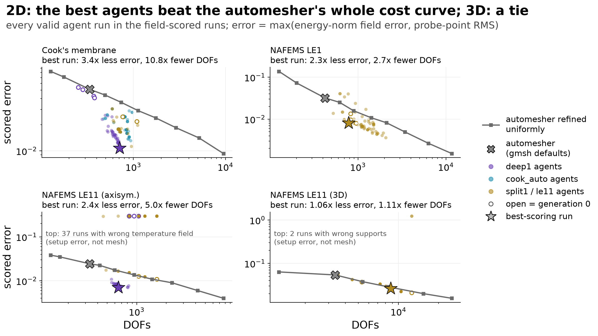
Caption. Scored error against DOFs (log-log) for every valid agent run in the 4 field-mode runs. Open circles are generation 0. The grey line is the automesher refined uniformly (gmsh default sizes x MeshSizeFactor), and the X is the automesher itself. The star is the best-scoring run.
Key numbers (best-scoring run against the uniformly refined automesher, log-log interpolated)
| problem | best run | error / DOFs | automesher error at the same DOFs | lower error | automesher DOFs for the same error | fewer DOFs |
|---|---|---|---|---|---|---|
| Cook | deep1 g10-cooks_membrane-a7 | 1.07% / 710 | 3.69% | 3.4x | 7,690 | 10.8x |
| LE1 | split1 g5-nafems_le1-a2 | 0.81% / 782 | 1.87% | 2.3x | 2,122 | 2.7x |
| LE11 axisym. | deep1 g10-nafems_le11_axisym-a4 | 0.71% / 648 | 1.68% | 2.4x | 3,267 | 5.0x |
| LE11 3D | le11 g6-nafems_le11_3d-a4 | 2.63% / 8,739 | 2.80% | 1.06x | 9,670 | 1.11x |
Sources
act1_runs.csv(fromace_runs//gen/runs/*.json).automesher_sweep.json(made byautomesher_sweep.py). Its factor-1 point reproducesace/field_refs/<problem>_auto.jsonexactly on all 4 problems (same DOFs, same error to 1e-9).
Caveats
- "The best agents beat the whole curve" is about the best runs: on LE1 many agent runs sit on or above the uniform curve; on Cook almost all runs after gen 0 sit below it.
- The uniform sweep is new computation made for this talk: gmsh plus the fixed skfem solver plus the same error function the runs were scored with. No agent or API was involved.
- "Error" = max(energy-norm field error, RMS von Mises error at 12 probe points), the scored error.
- The 37 LE11-axisymmetric runs near 30% error (4 in deep1 gen 0, 33 in le11), and the 2 LE11-3D runs at 124%, are wrong setups (temperature field; fixed instead of sliding supports), not meshes. They are drawn so nothing is hidden.
- In LE11 3D the agents mostly refine uniformly: no gain over the refined automesher.
The best agent scores 1.6-4.5x the automesher on every benchmark
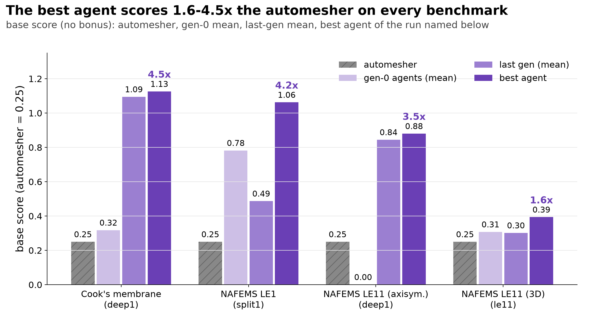
Caption. Base score of the automesher (0.25 by construction), the gen-0 mean agent, the last-generation mean agent and the best agent ever, per problem. Each problem uses the run that holds its best agent.
Key numbers (base score; the ratio is against the automesher's 0.25)
- Cook (deep1): 0.25 / 0.318 / 1.095 / 1.126 = 4.50x.
- LE1 (split1): 0.25 / 0.782 / 0.487 / 1.062 = 4.25x. The best is at gen 5, and the last generation is lower than gen 0.
- LE11 axisymmetric (deep1): 0.25 / 0.001 / 0.845 / 0.880 = 3.52x. Gen 0 is the setup bug.
- LE11 3D (le11): 0.25 / 0.307 / 0.302 / 0.394 = 1.57x. There is no training gain.
What the score means (ace/config.py)
- score = A / c, where c = DOFs / automesher DOFs.
- A = (g/2)^2 for g < 2, and A = g/2 above that.
- 1.0 = 2x the automesher's accuracy at its DOFs.
- Above the 2x target, a score ratio of k means "k x the accuracy per DOF". Cook's 4.5x is g = 4.76 at c = 2.11.
Sources. act1_numbers.json -> numbers.problems.*.per_run, best_run.
Caveats
- The best of all runs over all generations is a maximum over 44-60 runs per problem, so it is a selected value.
- For deep1 Cook the last-generation mean (1.095, 4.38x) is almost the same as the best, so selection is not what drives it.
- On LE1 and LE11 3D the best is an early, isolated peak.
- Identical meshes recur: LE1's best mesh also appears at g6-a0, and LE11-3D's at g7-a0 and g11-a0.
Matching the best agent costs the automesher up to 11x the DOFs
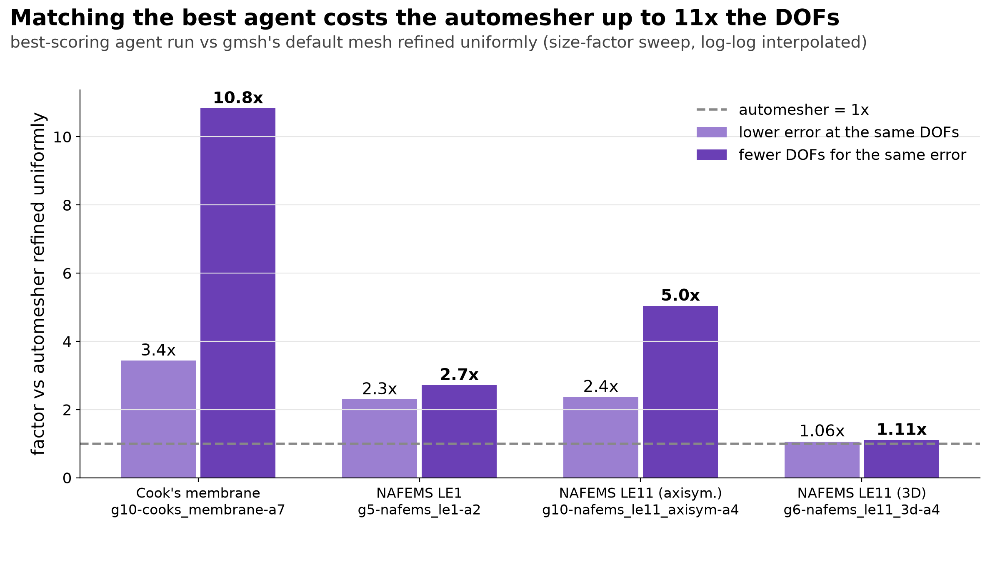
Caption. For each problem's best-scoring agent run, two factors against gmsh's default mesh refined uniformly:
- how much lower the agent's error is at the same DOFs (light bars);
- how many times more DOFs the automesher needs to reach the agent's error (dark bars).
Key numbers. Cook 3.4x / 10.8x; LE1 2.3x / 2.7x; LE11 axisymmetric 2.4x / 5.0x; LE11 3D 1.06x / 1.11x. All are interpolated inside the sweep; nothing is extrapolated.
Sources. automesher_sweep.json, act1_numbers.json (error_reduction_at_equal_dofs, dof_saving_at_equal_error).
Caveats
- The comparison mesher is gmsh's default refined uniformly. A human expert, or gmsh with curvature/size fields, would do better than this baseline.
- One best run per problem, interpolated linearly in log-log between sweep points.
- This is the fairest form of "Nx better than the automesher": the score's own reference, the unrefined automesher at 336 DOFs, flatters the agents' meshes, which use 2x the DOFs.
Same part, same solver: the trained agent grades the mesh into the corners
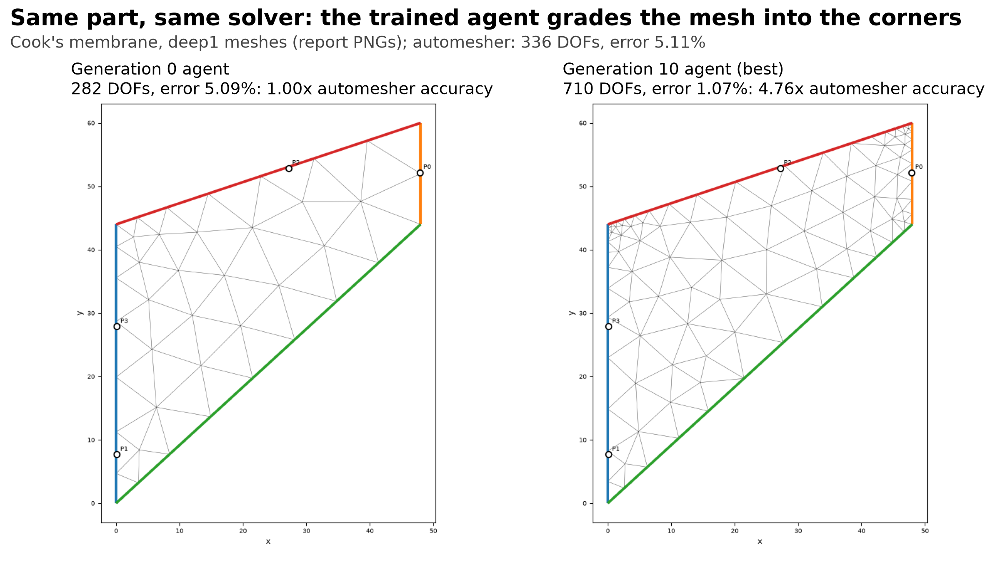
Caption. Cook's membrane in deep1. Left: a generation-0 agent's mesh, which is automesher-level. Right: the best generation-10 mesh, refined into the re-entrant top-left corner and the loaded top-right corner.
Key numbers
- Left, g0-cooks_membrane-a1: 282 DOFs, error 5.09%, g = 1.00, base score 0.300.
- Right, g10-cooks_membrane-a7: 710 DOFs, error 1.07%, g = 4.76, base score 1.126.
- Automesher: 336 DOFs, error 5.11%.
Sources. ace_runs/deep1/gen0/reports/g0-cooks_membrane-a1_mesh.png and ace_runs/deep1/gen10/reports/g10-cooks_membrane-a7_mesh.png, cropped to the mesh. The numbers come from the matching gen*/runs/*.json.
Caveats
- Nothing was re-meshed. The left mesh is an agent's, not the automesher's own, but its accuracy matches the automesher's (1.00x).
- The report error maps (
*_error.png) are not shown, because their colour scales differ between the two runs.
Act 2: swarms train better, and this scales
On the hard 3D CAD parts, more agents trained together reach better meshes: 16 > 8 > 4 > 2, and 8 > 4 > 2 in every comparison, and 8 agents beat one budget-matched agent.
on 65_bc0, 8 agents improve almost every generation; 2 agents stall
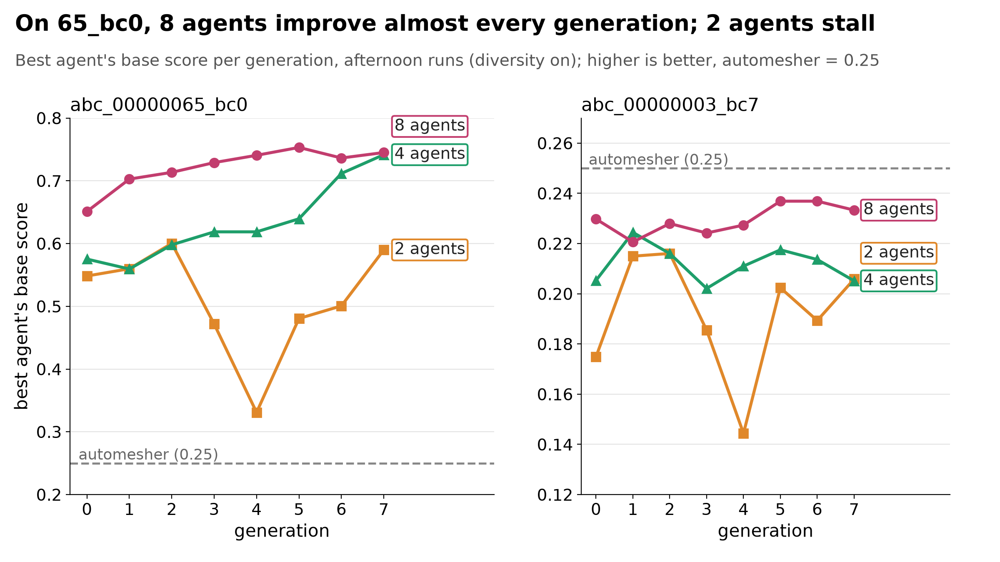
Caption. Best agent's base score in each generation for swarms of 2, 4 and 8 Sonnet agents (afternoon runs, diversity mechanisms on). On abc_00000065_bc0 the 8-agent swarm starts highest and climbs to about 3x the automesher; on abc_00000003_bc7 no team beats the automesher.
Key numbers (afternoon, best per generation, gens 0 -> 7).
- abc_00000065_bc0: 8 agents 0.651 -> 0.745 (max 0.753; steps up/down/flat 6/1/0, largest drop -0.017); 4 agents 0.575 -> 0.742 (up/down/flat 5/1/1, largest drop -0.016); 2 agents 0.548 -> 0.590 (up/down/flat 5/2/0, largest drop -0.141, low point 0.331 in gen 4).
- abc_00000003_bc7: 8 agents 0.230 -> 0.233 (max 0.237), 4 agents 0.205 -> 0.205, 2 agents 0.175 -> 0.206. Highest bc7 base score in any of the nine runs: 0.237 (< 0.25).
- Step counts use a flat band of +-0.005.
Data. ace_runs/div_s{1,2,4,8}/gen*/runs/g*-{task}-*.json (checks.base_score, recomputed from rel_error, auto_error, dofs, auto_dofs). Plotted values: data.json -> runs.<run>.tasks.<task>.
Caveats.
- One run per configuration; the afternoon README estimates run-to-run noise at 0.03-0.1 per generation.
- Team size n splits 50/50 over the two tasks, so the per-task best is the max of n/2 runs (1, 2, 4 for n = 2, 4, 8). Best-of-n includes more draws; the framing used here is that the swarm is trained and deployed together, so its best mesh is the one used.
- abc_00000003_bc7: every team stays below the automesher (best 0.237); the differences between team sizes' mean-of-best (gens 1-7) are about 0.02-0.04 and the 8 > 4 > 2 order is already there in gen 0, before any learning.
- "Almost every generation" means 6 of 7 steps up on abc_00000065_bc0 for 8 agents; the 4-agent swarm has nearly as many up-steps (5 vs 6) and a larger net gain (0.166 vs 0.094), but it sits around 0.56-0.64 for gens 0-5 and only catches up in gens 6-7.
on 65_bc0, 8 agents improve almost every generation; 2 agents stall
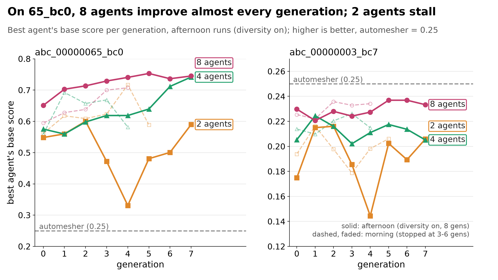
Caption. Best agent's base score in each generation for swarms of 2, 4 and 8 Sonnet agents (afternoon runs, diversity mechanisms on); morning runs dashed and faded. On abc_00000065_bc0 the 8-agent swarm starts highest and climbs to about 3x the automesher; on abc_00000003_bc7 no team beats the automesher.
Key numbers (afternoon, best per generation, gens 0 -> 7).
- abc_00000065_bc0: 8 agents 0.651 -> 0.745 (max 0.753; steps up/down/flat 6/1/0, largest drop -0.017); 4 agents 0.575 -> 0.742 (up/down/flat 5/1/1, largest drop -0.016); 2 agents 0.548 -> 0.590 (up/down/flat 5/2/0, largest drop -0.141, low point 0.331 in gen 4).
- abc_00000003_bc7: 8 agents 0.230 -> 0.233 (max 0.237), 4 agents 0.205 -> 0.205, 2 agents 0.175 -> 0.206. Highest bc7 base score in any of the nine runs: 0.237 (< 0.25).
- Step counts use a flat band of +-0.005.
Data. ace_runs/div_s{1,2,4,8}/gen*/runs/g*-{task}-.json (checks.base_score, recomputed from rel_error, auto_error, dofs, auto_dofs); ace_runs/scale_s{1,1_opus,2,4,8}/gen/runs/g*-{task}-*.json (same fields). Plotted values: data.json -> runs.<run>.tasks.<task>.
Caveats.
- One run per configuration; the afternoon README estimates run-to-run noise at 0.03-0.1 per generation.
- Team size n splits 50/50 over the two tasks, so the per-task best is the max of n/2 runs (1, 2, 4 for n = 2, 4, 8). Best-of-n includes more draws; the framing used here is that the swarm is trained and deployed together, so its best mesh is the one used.
- abc_00000003_bc7: every team stays below the automesher (best 0.237); the differences between team sizes' mean-of-best (gens 1-7) are about 0.02-0.04 and the 8 > 4 > 2 order is already there in gen 0, before any learning.
- "Almost every generation" means 6 of 7 steps up on abc_00000065_bc0 for 8 agents; the 4-agent swarm has nearly as many up-steps (5 vs 6) and a larger net gain (0.166 vs 0.094), but it sits around 0.56-0.64 for gens 0-5 and only catches up in gens 6-7.
16 > 8 > 4 > 2
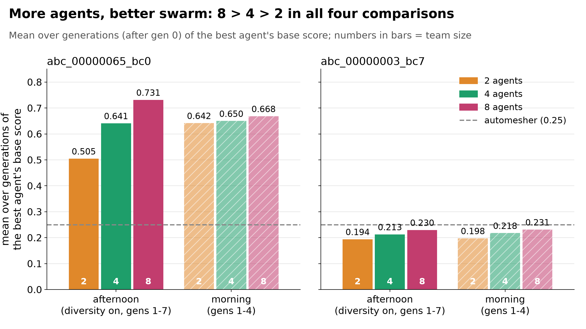
Caption. For each study and task, the best agent's base score averaged over the generations after gen 0. The ordering 8 > 4 > 2 agents holds in 4 of 4 cases. The 16-agent swarm (afternoon setup only) beats 8 agents on 2 of 2 tasks: abc_00000065_bc0 0.754 vs 0.731 and abc_00000003_bc7 0.241 vs 0.230.
Key numbers.
| study | task | 2 agents | 4 agents | 8 agents | 8 > 4 > 2 |
|---|---|---|---|---|---|
| div | abc_00000065_bc0 | 0.505 | 0.641 | 0.731 | yes |
| div | abc_00000003_bc7 | 0.194 | 0.213 | 0.230 | yes |
| scale | abc_00000065_bc0 | 0.642 | 0.650 | 0.668 | yes |
| scale | abc_00000003_bc7 | 0.198 | 0.218 | 0.231 | yes |
Windows: afternoon gens 1-7 (all runs have gens 0-7); morning gens 1-4, the window all three morning swarms completed. With each morning run's own window (2 agents gens 1-5, 4 and 8 agents gens 1-4, as in results/scaling_gold_2026-10-31/README.md) the morning values are: 2 agents 0.199 / 0.631, 4 agents 0.218 / 0.650, 8 agents 0.231 / 0.668 (bc7 / 65_bc0); the order is the same.
Data. ace_runs/div_s{1,2,4,8}/gen*/runs/g*-{task}-.json (checks.base_score, recomputed from rel_error, auto_error, dofs, auto_dofs); ace_runs/scale_s{1,1_opus,2,4,8}/gen/runs/g*-{task}-*.json (same fields); 16 agents: results/diversity_s16_2026-11-01/scores.json (per-generation best, exported by Jaime from ace_runs/div_s16, which stays on his laptop). Plotted values: data.json -> fig2.
Caveats.
- One run per configuration; the afternoon README estimates run-to-run noise at 0.03-0.1 per generation.
- Team size n splits 50/50 over the two tasks, so the per-task best is the max of n/2 runs (1, 2, 4 for n = 2, 4, 8). Best-of-n includes more draws; the framing used here is that the swarm is trained and deployed together, so its best mesh is the one used.
- 16 agents: one run, read from its exported per-generation scores rather than the raw run files. Its field references were rebuilt for that run with
ace.gold_reference(same study meshes, last level 3% under the DOF cap, commit 603f3e7), so its scores may differ slightly in scale from the 2-8 agent runs. There is no morning 16-agent run. - The returns diminish: on 65_bc0, 4 -> 8 agents gains 0.090 and 8 -> 16 gains 0.022, for $79.54 vs $41.45 of API calls.
- Morning 65_bc0 gaps are small (2 / 4 / 8: 0.642 / 0.650 / 0.668), well inside the 0.03-0.1 per-generation noise; and the single highest morning 65_bc0 score was the 2-agent run's 0.717 (gen 4). The morning bc7 order is consistent, the morning 65_bc0 order is weak.
- On bc7 the bars are all below the automesher's 0.25.
16 > 8 > 4 > 2, extrapolated
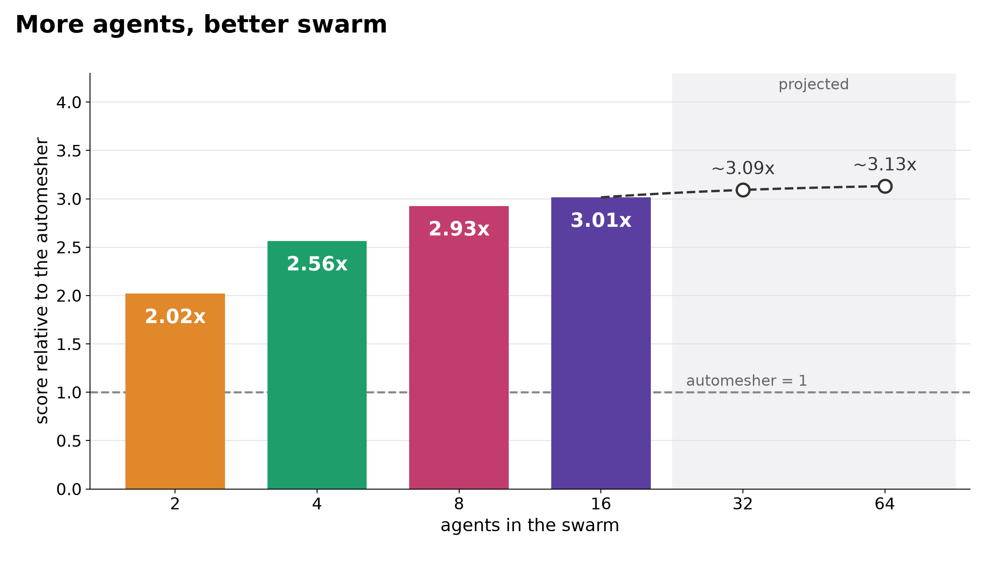
Caption. abc_00000065_bc0, afternoon setup (diversity on), automesher = 1 (scores divided by 0.25). Bars: the last measured value (gen 7) of avg = average agent of each generation (fig7_training_bc0_avg ends on these bars). Dashed: y = c - d n^-1/2 fitted to the four bars (c = 3.44, d = 1.41); 32 agents 3.19x, 64 agents 3.27x (no swarm of that size was run).
Key numbers. 2 / 4 / 8 / 16 agents: 2.36x / 2.91x / 2.93x / 3.03x. Fit residuals: -0.09 / +0.17 / -0.01 / -0.07.
Data. 2/4/8 agents: ace_runs/div_s{2,4,8}/gen*/runs/g*-abc_00000065_bc0-*.json (checks.base_score). 16 agents: results/diversity_s16_2026-11-01/scores.json (per-generation best and mean exported by Jaime from his run).
Caveats.
- One run per team size (noise 0.03-0.1 in score, 0.1-0.4 on this axis); a 2-parameter fit to 4 points. The exponent 1/2 is chosen; a free exponent fits a faster plateau.
- The 16-agent run's references were rebuilt (see fig2).
16 > 8 > 4 > 2, extrapolated
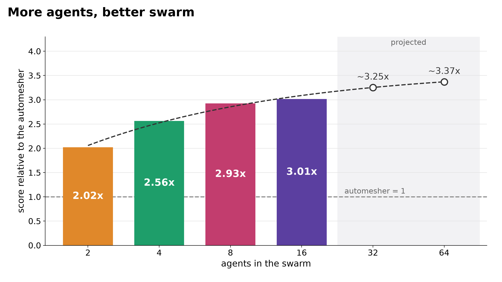
Caption. abc_00000065_bc0, afternoon setup (diversity on), automesher = 1 (scores divided by 0.25). Bars: the last measured value (gen 7) of bestmean = running mean of the best agent per generation (gens 1..g) (fig7_training_bc0_bestmean ends on these bars). Dashed: y = c - d n^-1/2 fitted to the four bars (c = 3.65, d = 2.25); 32 agents 3.25x, 64 agents 3.37x (no swarm of that size was run).
Key numbers. 2 / 4 / 8 / 16 agents: 2.02x / 2.56x / 2.93x / 3.01x. Fit residuals: -0.04 / +0.04 / +0.07 / -0.07.
Data. 2/4/8 agents: ace_runs/div_s{2,4,8}/gen*/runs/g*-abc_00000065_bc0-*.json (checks.base_score). 16 agents: results/diversity_s16_2026-11-01/scores.json (per-generation best and mean exported by Jaime from his run).
Caveats.
- One run per team size (noise 0.03-0.1 in score, 0.1-0.4 on this axis); a 2-parameter fit to 4 points. The exponent 1/2 is chosen; a free exponent fits a faster plateau.
- The 16-agent run's references were rebuilt (see fig2).
16 > 8 > 4 > 2, extrapolated
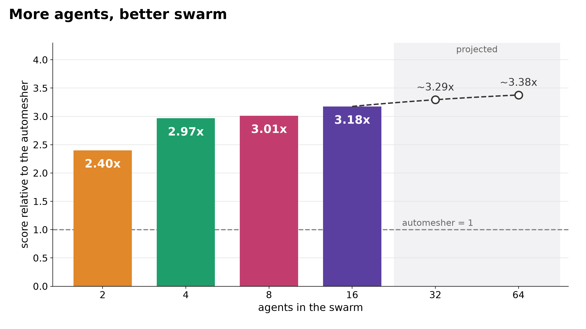
Caption. abc_00000065_bc0, afternoon setup (diversity on), automesher = 1 (scores divided by 0.25). Bars: the last measured value (gen 7) of max = best score reached so far (fig7_training_bc0_max ends on these bars). Dashed: y = c - d n^-1/2 fitted to the four bars (c = 3.62, d = 1.62); 32 agents 3.34x, 64 agents 3.42x (no swarm of that size was run).
Key numbers. 2 / 4 / 8 / 16 agents: 2.40x / 2.97x / 3.01x / 3.18x. Fit residuals: -0.08 / +0.15 / -0.04 / -0.04.
Data. 2/4/8 agents: ace_runs/div_s{2,4,8}/gen*/runs/g*-abc_00000065_bc0-*.json (checks.base_score). 16 agents: results/diversity_s16_2026-11-01/scores.json (per-generation best and mean exported by Jaime from his run).
Caveats.
- One run per team size (noise 0.03-0.1 in score, 0.1-0.4 on this axis); a 2-parameter fit to 4 points. The exponent 1/2 is chosen; a free exponent fits a faster plateau.
- The 16-agent run's references were rebuilt (see fig2).
16 > 8 > 4 > 2, extrapolated
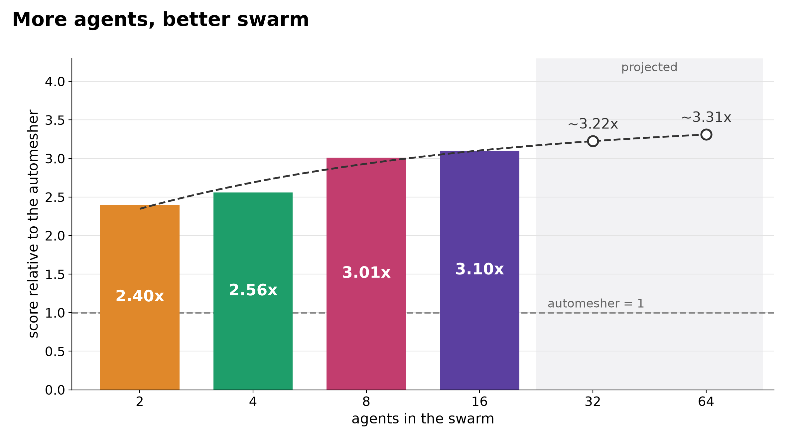
Caption. abc_00000065_bc0, afternoon setup (diversity on), automesher = 1 (scores divided by 0.25). Bars: the last measured value (gen 5) of max6 = best score reached so far, gens 0-5 only (fig7_training_bc0_max6 ends on these bars). Dashed: y = c - d n^-1/2 fitted to the four bars (c = 3.52, d = 1.65); 32 agents 3.22x, 64 agents 3.31x (no swarm of that size was run).
Key numbers. 2 / 4 / 8 / 16 agents: 2.40x / 2.56x / 3.01x / 3.10x. Fit residuals: +0.05 / -0.13 / +0.08 / -0.00.
Data. 2/4/8 agents: ace_runs/div_s{2,4,8}/gen*/runs/g*-abc_00000065_bc0-*.json (checks.base_score). 16 agents: results/diversity_s16_2026-11-01/scores.json (per-generation best and mean exported by Jaime from his run).
Caveats.
- One run per team size (noise 0.03-0.1 in score, 0.1-0.4 on this axis); a 2-parameter fit to 4 points. The exponent 1/2 is chosen; a free exponent fits a faster plateau.
- The 16-agent run's references were rebuilt (see fig2).
the average agent learns too
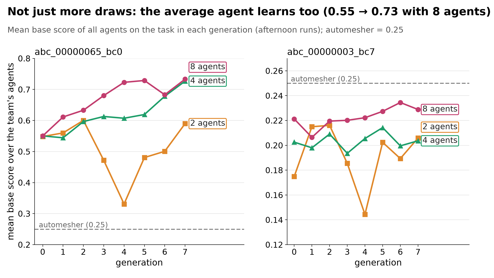
Caption. The mean base score over all agents working on the task in each generation. With 8 agents (4 per task) the average agent on abc_00000065_bc0 rises from 0.550 to 0.733, so the swarm's gain is not only a best-of-more-draws effect.
Key numbers (abc_00000065_bc0, mean agent per generation, gens 0-7).
- 8 agents: 0.550, 0.611, 0.633, 0.680, 0.723, 0.729, 0.683, 0.733
- 4 agents: 0.550, 0.544, 0.596, 0.613, 0.607, 0.619, 0.678, 0.727
- 2 agents (one run per task, so mean = best): 0.548, 0.560, 0.600, 0.472, 0.331, 0.481, 0.501, 0.590
- mean over gens 1-7: 8 agents 0.685, 4 agents 0.626, 2 agents 0.505.
- abc_00000003_bc7, gen 0 -> gen 7: 8 agents 0.221 -> 0.229, 4 agents 0.203 -> 0.204, 2 agents 0.175 -> 0.206 (range of the 8-agent mean: 0.206-0.234).
Data. ace_runs/div_s{1,2,4,8}/gen*/runs/g*-{task}-*.json (checks.base_score, recomputed from rel_error, auto_error, dofs, auto_dofs). Plotted values: data.json -> runs.<run>.tasks.<task>[].mean.
Caveats.
- The 4-agent swarm's mean agent ends at the same level (0.727 vs 0.733 in gen 7); 8 agents get there sooner (8-agent mean >= 0.68 from gen 3, the 4-agent mean first above 0.65 in gen 6). The 8-agent mean dips in gen 6 (0.683).
- On bc7 the mean agent barely moves for any team size.
- With roles on, part of each team is told to explore (lowest-ranked third) or to vary one factor, which pulls the mean down by design; the mean is a conservative measure.
- One run per configuration.
8 agents beat one budget-matched agent on 65_bc0 and tie on bc7
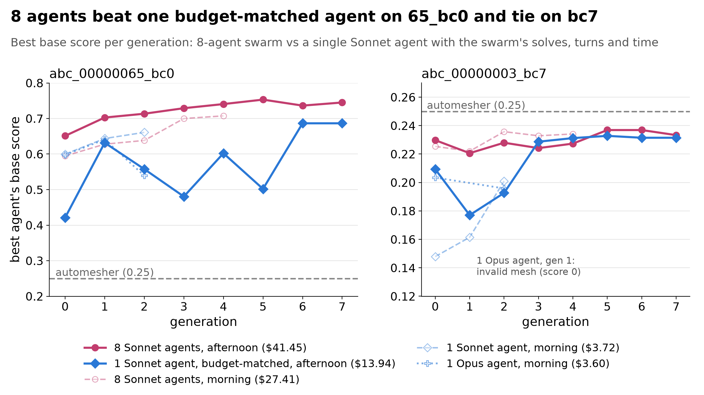
Caption. The afternoon 8-agent swarm (solid pink) against a single Sonnet agent that gets the whole swarm's solve and turn budget and its wall-clock time per generation (solid blue). Shorter morning runs dashed: the 8-agent swarm, the single Sonnet agent and a single Opus agent. API cost in the legend.
Key numbers.
- Mean of per-generation best, gens 1-7 (afternoon): abc_00000065_bc0 8 agents 0.731 vs single 0.592; abc_00000003_bc7 8 agents 0.230 vs single 0.218.
- abc_00000065_bc0 max: 8 agents 0.753, single 0.686.
- abc_00000003_bc7 from gen 3 on: single 0.229-0.233, 8 agents 0.224-0.237: the single agent matches the swarm there.
- Morning, gens 1-2 (all morning runs have them): 65_bc0 8 agents 0.633 vs single Sonnet 0.652; bc7 0.229 vs 0.181. Single Opus per gen (bc7 / 65_bc0): gen 0: 0.203 / 0.598; gen 1: invalid / 0.641; gen 2: 0.196 / 0.539.
- API cost: 8 agents afternoon $41.45, single afternoon $13.94; morning 8 agents $27.41, single Sonnet $3.72, single Opus $3.60.
Data. ace_runs/div_s8, ace_runs/div_s1, ace_runs/scale_s8, ace_runs/scale_s1, ace_runs/scale_s1_opus (gen*/runs/*.json checks; cost.jsonl). Budget matching: ace_runs/run_div_s1.sh, ace/single_loop.py (per task MAX_SOLVES x swarm agents per task = 16 solves, MAX_TURNS x 8 turns per generation, time-matched to div_s8).
Caveats.
- "Budget-matched" means solves, turns and wall-clock time, not dollars: the single agent cost about 1/3 of the swarm ($13.94 vs $41.45); the swarm's cost is dominated by the Opus teacher (see fig 6).
- The single agent is not stronger per call: div_s1 and scale_s1 use Sonnet like the swarm agents (high effort); only scale_s1_opus uses Opus, and it ran 3 generations, with an invalid bc7 mesh in gen 1.
- div_s1 gen 7 resubmitted exactly the gen-6 meshes on both tasks (same DOFs and error).
- On bc7 the single agent catches up with the swarm from gen 3; the swarm's advantage is clear only on 65_bc0.
- The morning runs point the other way on 65_bc0: over gens 1-2 the single Sonnet agent (0.652) is above the morning 8-agent swarm (0.633), while the swarm leads on bc7 (0.229 vs 0.181). Only 2 learning generations, so this is weak evidence either way, but the afternoon result is not replicated by the morning pair.
- One run per configuration; the morning runs are short (3 generations for the single agents).
cost grows sub-linearly with team size
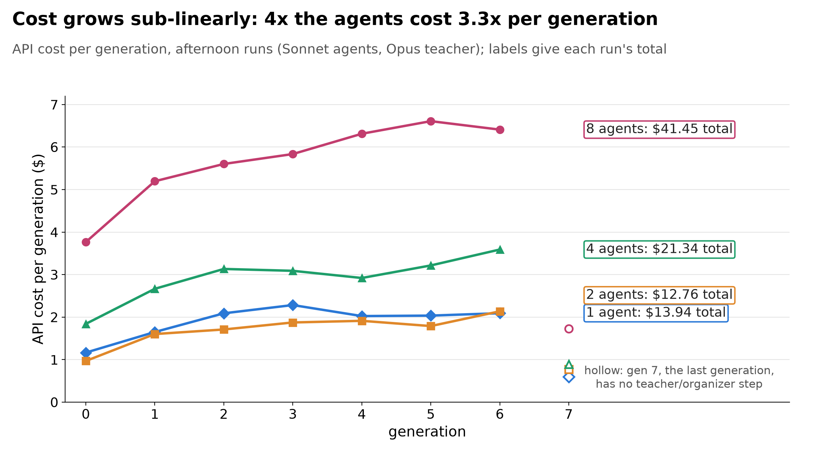
Caption. API dollars spent per generation by each afternoon run. Going from 2 to 8 agents multiplies the mean cost per generation (gens 0-6) by 3.31, not 4 (2 -> 4 agents: 1.71x; 4 -> 8: 1.94x). Both the agents' spend and the Opus teacher's spend grow less than linearly (table).
Key numbers (afternoon runs; mean $/gen over gens 0-6, gen 7 excluded because the run ends before its teacher step).
| agents | total $ | mean $/gen (0-6) | agents (generator) $ | teacher (Opus) $ | reflect $ | organizer $ |
|---|---|---|---|---|---|---|
| 1 | $13.94 | $1.91 | $3.96 | $8.33 | $0.56 | $1.09 |
| 2 | $12.76 | $1.71 | $3.47 | $7.49 | $0.54 | $1.26 |
| 4 | $21.34 | $2.92 | $6.05 | $12.21 | $1.10 | $1.98 |
| 8 | $41.45 | $5.67 | $12.51 | $23.09 | $2.23 | $3.61 |
Morning totals: 1 agent $3.72, 2 agents $8.69, 4 agents $15.52, 8 agents $27.41; single Opus $3.60. Afternoon total $89.49.
Data. ace_runs/div_s{1,2,4,8}/cost.jsonl (usd per call). A generator call carries its generation in run_id; reflection, teacher and organizer calls (empty run_id) are assigned to the latest generation started. This attribution reproduces ace_runs/div_s1/generations.jsonl and the cumulative $ in ace_runs/div_s8/summary.md exactly.
Caveats.
- The 1-agent row is the single agent (div_s1, one conversation for both tasks); it costs slightly more per generation than the 2-agent swarm.
- "Sub-linear" is from one run per size and 7 generations; it is not a cost model.
- The 8-agent swarm's teacher spend ($23.09) is larger than its agents' spend ($12.51).
training curves on abc_00000065_bc0, extended to gen 15
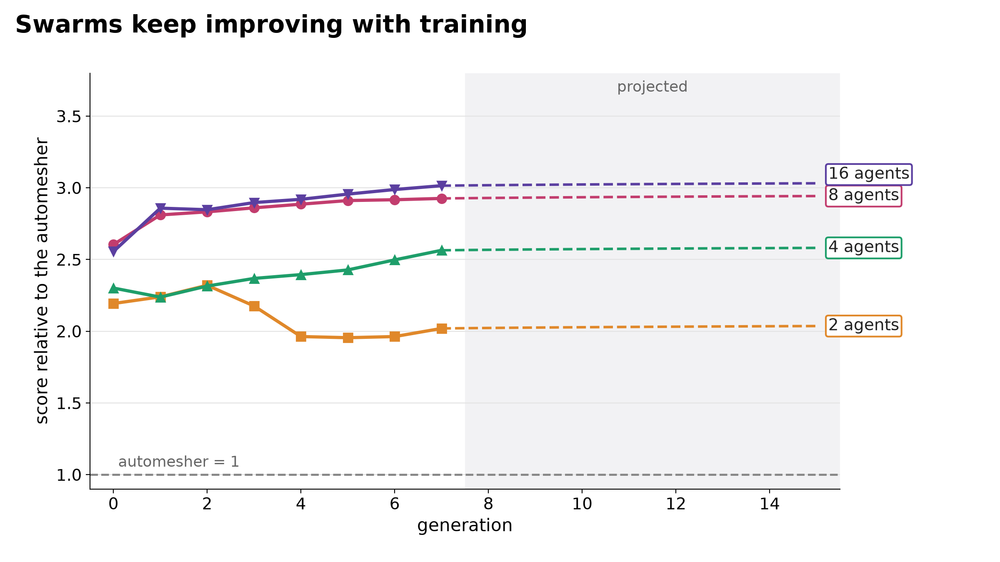
Caption. Afternoon setup, automesher = 1. Solid: average agent of each generation; gen 7 is the fig3_scaling_bc0_avg bar. Dashed: the mean agent's per-generation score is fitted with y = a + b ln(g + 1) on all 8 measured generations used and continued from its last measured value at that rate to gen 15; the same measure is applied to measured + projected values. Measured: gens 0-7 (no run went past gen 7).
| agents | gens 0-7 | rate b | projected gen 15 |
|---|---|---|---|
| 2 | 2.19 / 2.24 / 2.40 / 1.89 / 1.32 / 1.92 / 2.00 / 2.36 | -0.13 | 2.27 |
| 4 | 2.20 / 2.18 / 2.39 / 2.45 / 2.43 / 2.48 / 2.71 / 2.91 | 0.30 | 3.11 |
| 8 | 2.20 / 2.45 / 2.53 / 2.72 / 2.89 / 2.92 / 2.73 / 2.93 | 0.35 | 3.17 |
| 16 | 2.25 / 2.24 / 2.76 / 2.73 / 2.83 / 2.87 / 2.90 / 3.03 | 0.39 | 3.30 |
Data. 2/4/8 agents: ace_runs/div_s{2,4,8}/gen*/runs/g*-abc_00000065_bc0-*.json (checks.base_score). 16 agents: results/diversity_s16_2026-11-01/scores.json (per-generation best and mean exported by Jaime from his run).
Caveats.
- One run per team size; the rate is a 2-parameter fit to 8 points. The log curve is the shape the data prefer (a free saturating exponent runs to ~0): the 8 generations do not show a plateau yet, which is not evidence that there is none.
- 2 agents = 1 agent per task, i.e. no swarm; its per-generation score falls to 1.32x in gen 4.
training curves on abc_00000065_bc0, extended to gen 15
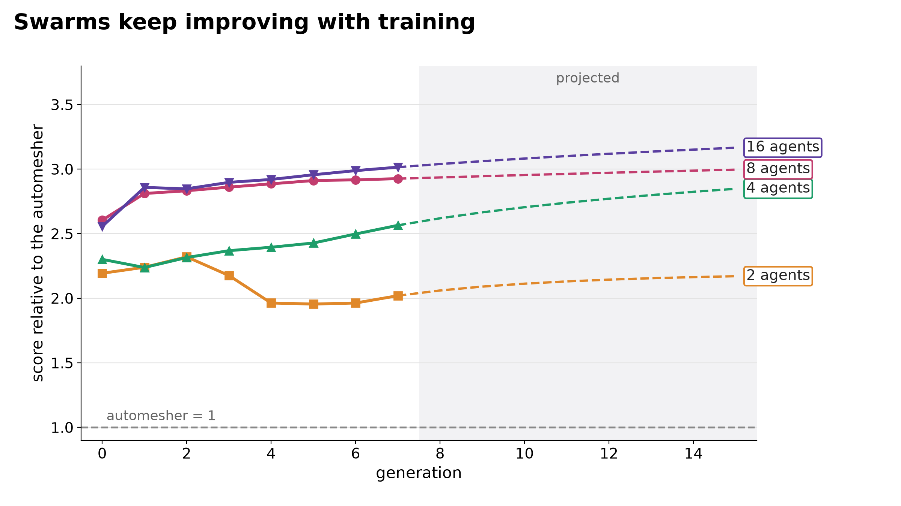
Caption. Afternoon setup, automesher = 1. Solid: running mean of the best agent per generation (gens 1..g); gen 7 is the fig3_scaling_bc0_bestmean bar. Dashed: the best agent's per-generation score is fitted with y = a + b ln(g + 1) on all 8 measured generations used and continued from its last measured value at that rate to gen 15; the same measure is applied to measured + projected values. Measured: gens 0-7 (no run went past gen 7).
| agents | gens 0-7 | rate b | projected gen 15 |
|---|---|---|---|
| 2 | 2.19 / 2.24 / 2.32 / 2.18 / 1.96 / 1.95 / 1.96 / 2.02 | -0.13 | 2.17 |
| 4 | 2.30 / 2.24 / 2.31 / 2.37 / 2.39 / 2.43 / 2.50 / 2.56 | 0.30 | 2.85 |
| 8 | 2.60 / 2.81 / 2.83 / 2.86 / 2.89 / 2.91 / 2.92 / 2.93 | 0.18 | 3.00 |
| 16 | 2.56 / 2.86 / 2.85 / 2.90 / 2.92 / 2.96 / 2.99 / 3.01 | 0.28 | 3.17 |
Data. 2/4/8 agents: ace_runs/div_s{2,4,8}/gen*/runs/g*-abc_00000065_bc0-*.json (checks.base_score). 16 agents: results/diversity_s16_2026-11-01/scores.json (per-generation best and mean exported by Jaime from his run).
Caveats.
- One run per team size; the rate is a 2-parameter fit to 8 points. The log curve is the shape the data prefer (a free saturating exponent runs to ~0): the 8 generations do not show a plateau yet, which is not evidence that there is none.
- 2 agents = 1 agent per task, i.e. no swarm; its per-generation score falls to 1.32x in gen 4.
training curves on abc_00000065_bc0, extended to gen 15
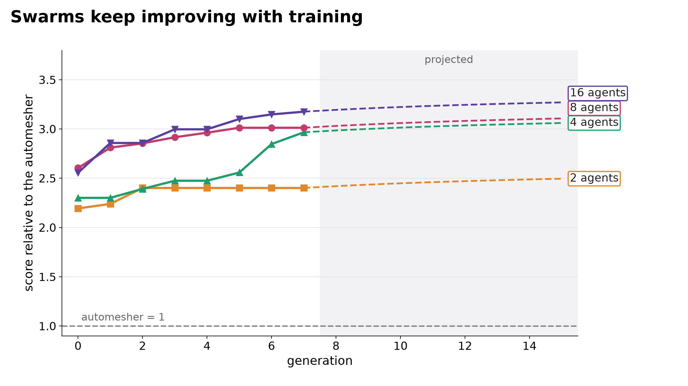
Caption. Afternoon setup, automesher = 1. Solid: best score reached so far; gen 7 is the fig3_scaling_bc0_max bar. Dashed: the best agent's per-generation score is fitted with y = a + b ln(g + 1) on all 8 measured generations used and continued from its last measured value at that rate to gen 15; the same measure is applied to measured + projected values. Measured: gens 0-7 (no run went past gen 7).
| agents | gens 0-7 | rate b | projected gen 15 |
|---|---|---|---|
| 2 | 2.19 / 2.24 / 2.40 / 2.40 / 2.40 / 2.40 / 2.40 / 2.40 | -0.13 | 2.40 |
| 4 | 2.30 / 2.30 / 2.39 / 2.47 / 2.47 / 2.56 / 2.85 / 2.97 | 0.30 | 3.17 |
| 8 | 2.60 / 2.81 / 2.85 / 2.92 / 2.96 / 3.01 / 3.01 / 3.01 | 0.18 | 3.10 |
| 16 | 2.56 / 2.86 / 2.86 / 3.00 / 3.00 / 3.10 / 3.15 / 3.18 | 0.28 | 3.37 |
Data. 2/4/8 agents: ace_runs/div_s{2,4,8}/gen*/runs/g*-abc_00000065_bc0-*.json (checks.base_score). 16 agents: results/diversity_s16_2026-11-01/scores.json (per-generation best and mean exported by Jaime from his run).
Caveats.
- One run per team size; the rate is a 2-parameter fit to 8 points. The log curve is the shape the data prefer (a free saturating exponent runs to ~0): the 8 generations do not show a plateau yet, which is not evidence that there is none.
- 2 agents = 1 agent per task, i.e. no swarm; its per-generation score falls to 1.32x in gen 4.
training curves on abc_00000065_bc0, extended to gen 11
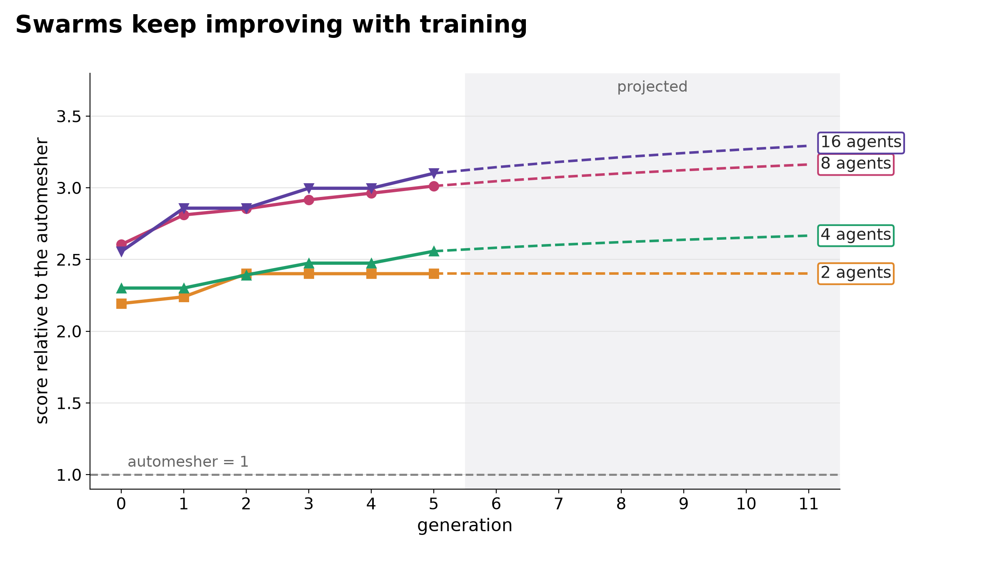
Caption. Afternoon setup, automesher = 1. Solid: best score reached so far, gens 0-5 only; gen 5 is the fig3_scaling_bc0_max6 bar. Dashed: the best agent's per-generation score is fitted with y = a + b ln(g + 1) on all 8 measured generations used and continued from its last measured value at that rate to gen 11; the same measure is applied to measured + projected values. Measured: gens 0-5 (the runs went to gen 7; gens 6-7 are left out of this version).
| agents | gens 0-5 | rate b | projected gen 11 |
|---|---|---|---|
| 2 | 2.19 / 2.24 / 2.40 / 2.40 / 2.40 / 2.40 | -0.34 | 2.40 |
| 4 | 2.30 / 2.30 / 2.39 / 2.47 / 2.47 / 2.56 | 0.16 | 2.67 |
| 8 | 2.60 / 2.81 / 2.85 / 2.92 / 2.96 / 3.01 | 0.22 | 3.16 |
| 16 | 2.56 / 2.86 / 2.86 / 3.00 / 3.00 / 3.10 | 0.28 | 3.29 |
Data. 2/4/8 agents: ace_runs/div_s{2,4,8}/gen*/runs/g*-abc_00000065_bc0-*.json (checks.base_score). 16 agents: results/diversity_s16_2026-11-01/scores.json (per-generation best and mean exported by Jaime from his run).
Caveats.
- One run per team size; the rate is a 2-parameter fit to 8 points. The log curve is the shape the data prefer (a free saturating exponent runs to ~0): the 8 generations do not show a plateau yet, which is not evidence that there is none.
- 2 agents = 1 agent per task, i.e. no swarm; its per-generation score falls to 1.32x in gen 4.
Act 3: the harness learns from real lab data
A 3D-printed part crushed on an Instron: before post-training the simulation is 33 % off the real test; with the learned test conditions and the swarm post-trained on the test, its most accurate mesh is 2.0 % off.
- Act 3 videos: before vs after post-training, simulated crush of the printed part
- Crack prediction (Act 3): where and when each simulation predicts the first crack, vs the real part
Real test: seating, linear climb, yielding to 4.8 kN, then cracking
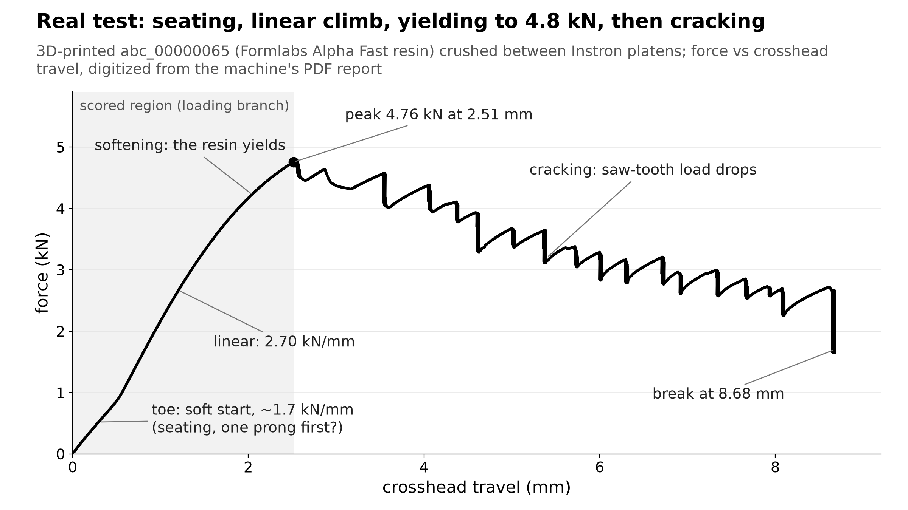
Caption. The 3D-printed abc_00000065 C-bracket (Formlabs Alpha Fast) crushed between Instron platens: a soft seating toe, a straight climb, softening as the resin yields, a peak (the first crack), then saw-tooth load drops to the break. The shaded loading branch, up to the peak, is what every simulation is compared with.
Key numbers (computed in make_figures.py from the test CSV):
- peak 4755 N at 2.513 mm crosshead travel in this digitization (the machine report says 4.80 kN at 2.56 mm)
- toe slope 1.66 kN/mm (fit over 0.10-0.45 mm); linear slope 2.70 kN/mm (fit over 1050-1800 N)
- force at 2.5 mm: 4743 N; last point (break) at 8.68 mm; 2581 digitized points
Data. physical_tests/abc_00000065_compression/cload_compression.csv (the frozen spec's test file); test notes cload_compression.json next to it.
Caveats.
- The curve is digitized from the plot in the machine's PDF report (about +-0.01 mm, +-15 N), not raw data. A second digitization put the peak about 1 % higher (4798 N at 2.556 mm); the error uses this file.
- Displacement is crosshead travel (no extensometer): it includes seating and the load train's deflection.
- "Seating, one prong first?" for the toe is an interpretation from the test notes, not a measurement.
Before post-training, the simulation is 33 % off the real test
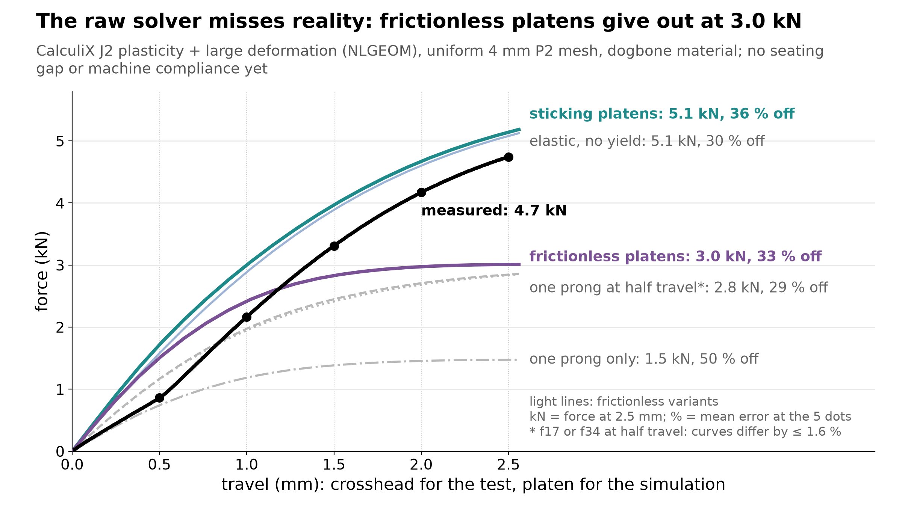
Caption. The out-of-the-box nonlinear simulation, before post-training: frictionless platens on gmsh's default mesh, crosshead travel = platen travel. It starts too stiff (no seating gap) and then gives out: the prongs splay and the force levels off at 3.3 kN, where the real part carried 4.7 kN at 2.5 mm. Mean error: 32.7 % off the real test.
Key numbers. 2,937 nodes (8,811 DOFs). Force vs test at 0.5 / 1.0 / 1.5 / 2.0 / 2.5 mm: 1580 / 2566 / 3045 / 3231 / 3298 N vs 860 / 2164 / 3308 / 4171 / 4743 N (+84 / +19 / -8 / -23 / -30 %).
Data. talk_plots/act3_real_data/videos/before_run/curve.csv and summary.json next to it (CalculiX J2 + NLGEOM, the frozen ramp with frictionless platens; error recomputed from the curve = the recorded 0.3265).
Caveats. "Before post-training" means before the swarm was post-trained on this test: the solver and the swarm were already capable. This run also lacks the test conditions learned from the experiment (sticking platens, seating gap, load-train compliance); fig3 separates the two steps.
From 33 % to 2.0 % off the real test: test conditions, then post-training
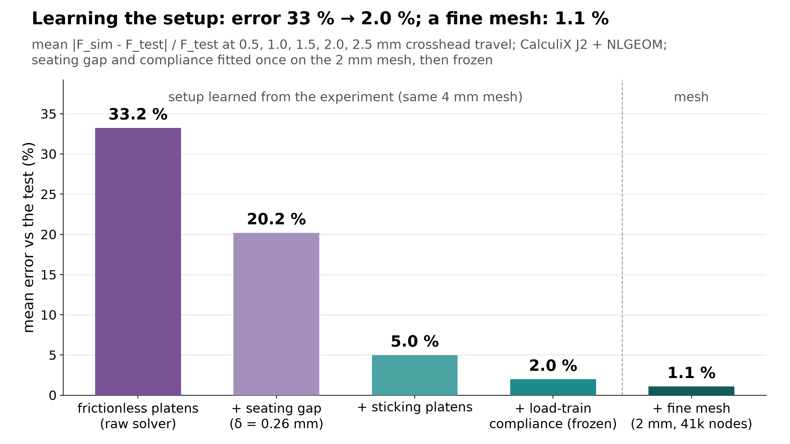
Caption. Each step on top of the previous one. Before post-training the simulation is 33 % off the real test. Learning the test conditions from the experiment (sticking platens, a seating gap, load-train compliance; then frozen) brings gmsh's default mesh to 7.8 %. The swarm's pre-trained mesh (trained on a different load case) gets 4.6 %, and the mesh from post-training on the real test 2.0 %.
| step | mesh | nodes | off the real test |
|---|---|---|---|
| before post-training (frictionless platens, no seating/compliance) | automesher | 2,937 | 32.65 % |
| + learned test conditions | automesher (curved P2) | 2,937 | 7.84 % |
| + pre-trained swarm mesh | swarm bc0 mesh | 6,430 | 4.57 % |
| + post-trained swarm mesh (most accurate, g1-abc_00000065_compression-a2) | post-trained | 8,753 | 1.97 % |
Data. talk_plots/act3_real_data/videos/before_run/curve.csv; results/real_data_finetune/baselines/baselines.json (auto, swarm_bc0); ace_runs/nl_ft/gen1/work/abc_00000065_compression-a2/nonlinear/curve.csv. Every error is recomputed from its curve and matches the recorded value.
Caveats.
- The automesher's 7.8 % uses its curved P2 mesh with only the midside nodes CalculiX rejects straightened. An earlier, higher automesher figure straightened every midside node (facetting the curved faces) and was wrong.
- The seating gap and compliance were fitted once on the finest uniform mesh against this same test, so the last steps are calibrated on the specimen they are scored against; there is one specimen.
- The last bar is the most accurate post-trained mesh, which uses more nodes than the others; the best-scoring one is 2.3 % off at 5,612 nodes (fig4).
- Uniform 4 mm (9,506 nodes) is 2.0 % off: about as accurate as the most accurate post-trained mesh with 8 % more nodes.
Post-trained meshes: 2.0-2.3 % off the real test, automesher 7.8 %
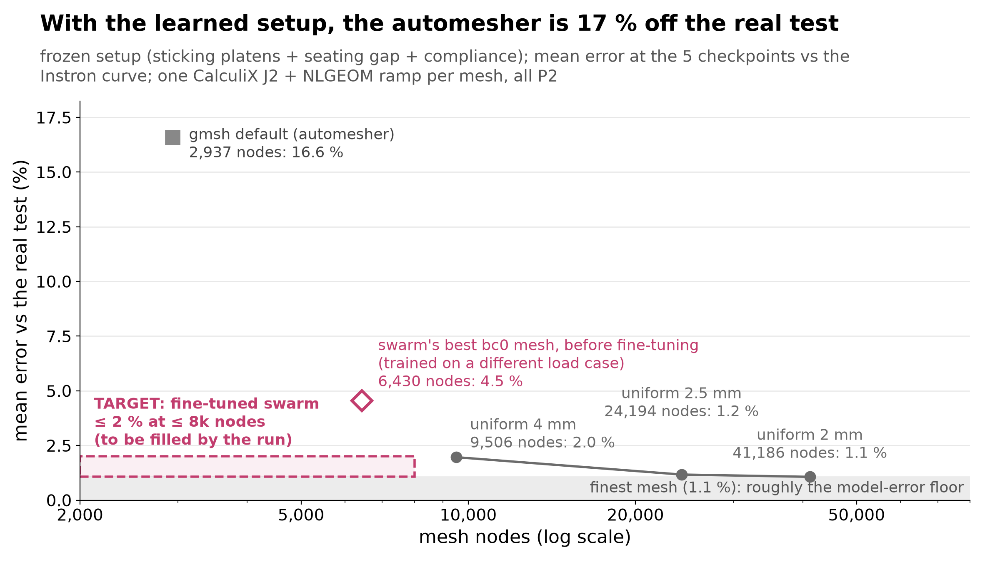
Caption. With the learned test conditions frozen, the mesh decides how far the simulation is off the real test. gmsh's default mesh is 7.8 % off and the swarm's pre-trained mesh 4.6 %. Post-training on the real test moves the swarm's meshes to about 2 %: the most accurate is 1.97 % off at 8,753 nodes (g1-abc_00000065_compression-a2; the same mesh in g0-abc_00000065_compression-a2, g1-abc_00000065_compression-a1, g1-abc_00000065_compression-a2), and the best-scoring 2.30 % at 5,612 nodes (g7-abc_00000065_compression-a1). The last generation's four meshes are all 2.2-2.3 % off at 5,650-5,981 nodes.
| reference mesh | nodes | off the real test |
|---|---|---|
| automesher (gmsh default) | 2,937 | 7.84 % |
| pre-trained swarm mesh | 6,430 | 4.57 % |
| uniform 4 mm | 9,506 | 1.99 % |
| uniform 2.5 mm | 24,194 | 1.20 % |
| uniform 2 mm | 41,186 | 1.08 % |
| post-trained, most accurate (g1-abc_00000065_compression-a2) | 8,753 | 1.97 % |
| post-trained, best lean (< 6k nodes, g8-abc_00000065_compression-a1) | 5,981 | 2.21 % |
| post-trained, best-scoring (g7-abc_00000065_compression-a1) | 5,612 | 2.30 % |
The most accurate post-trained mesh is 4.0x more accurate than the automesher; the best-scoring one 3.4x at 1.9x its nodes.
Data. ace_runs/nl_ft/gen*/runs/.json (checks.nonlinear: mean_rel_err, nodes); results/real_data_finetune/baselines/baselines.json and /curve.csv.
Caveats.
- Uniform 4 mm (9,506 nodes, 1.99 %) is as accurate as the most accurate post-trained mesh with 8 % more nodes. The lean post-trained meshes are slightly less accurate (2.2-2.3 %) with 37-41 % fewer nodes (5.6-6.0k vs 9.5k): the gain over uniform refinement is in nodes, not accuracy. The finer uniform meshes are more accurate (1.1-1.2 %) at 2.8-4.7x the nodes of the most accurate post-trained mesh.
- Below about 1 % the remaining difference is model error (material, conditions), not mesh error; the seating gap and compliance were fitted on this specimen.
- Several agents resubmitted the same mesh, so some dots overlap.
Post-trained mesh tracks the real test: 2.0 % off, automesher 7.8 %
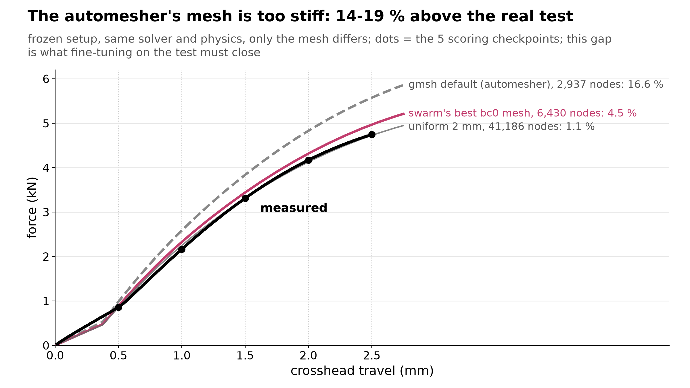
Caption. Same conditions, only the mesh differs. gmsh's default mesh is too stiff: its curve runs 6-11 % above the real test (7.8 % off on average). The most accurate mesh from post-training (g1-abc_00000065_compression-a2, 8,753 nodes) follows the measured curve, 2.0 % off.
Key numbers (force at 0.5 / 1.0 / 1.5 / 2.0 / 2.5 mm crosshead):
- real test: 860 / 2164 / 3308 / 4171 / 4743 N
- automesher: 910 / 2392 / 3546 / 4462 / 5152 N (+5.9 / +10.5 / +7.2 / +7.0 / +8.6 %)
- post-trained: 870 / 2277 / 3357 / 4195 / 4809 N (+1.2 / +5.2 / +1.5 / +0.6 / +1.4 %)
Data. results/real_data_finetune/baselines/auto/curve.csv; ace_runs/nl_ft/gen1/work/abc_00000065_compression-a2/nonlinear/curve.csv.
Caveats. The largest remaining gap is at 1.0 mm (+5.2 %), inside the seating toe, which the simple seating-gap model only approximates; every mesh shares it (uniform 2 mm: +3.9 %). This mesh is the one used for the Act 3 crack and video pages.
Platen friction carries the strength: without it the prongs splay
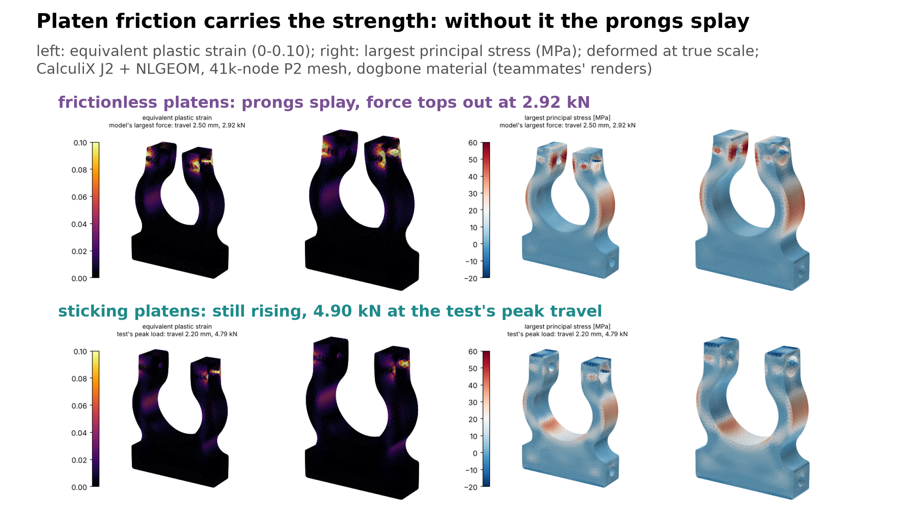
Caption. The teammates' CalculiX renders on a 41k-node mesh: with frictionless platens the prongs splay and yield at the nut pockets, and the force tops out at 2.92 kN; with sticking platens the part keeps carrying load (4.90 kN at the test's peak travel). This is why the learned test conditions use sticking platens.
Key numbers (physical_tests/abc_00000065_compression/ccx_ramp/summary.json, dogbone material): team_slide F_max 2919 N; team_stick F at the test's peak travel 4903 N, F_max 5352 N at 3.0 mm.
Data. physical_tests/abc_00000065_compression/ccx_ramp/render_team_slide.png and render_team_stick.png (copied here unchanged; the figure crops their middle rows), summary.json.
Caveats.
- These are the teammates' ramps (scripts/ccx_compression_ramp.py), not the frozen setup: the base is held, there is no seating/compliance mapping, and the travel is platen travel.
- The panel subtitles inside the images are the renderer's own labels (small at slide size).
Post-training: best score 2.7x → 3.6x the automesher, average 2.3x → 3.5x
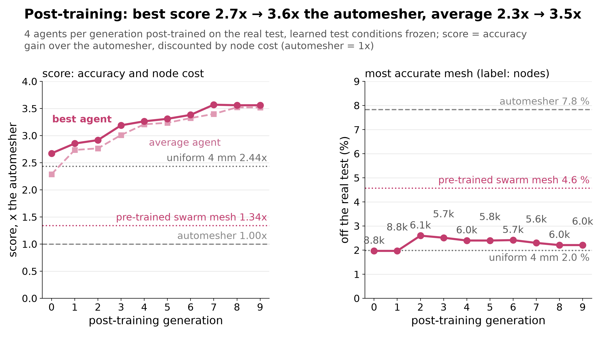
Caption. Post-training the swarm on the real test, 10 generations of 4 agents. Left: the best agent's score rises from 2.67x to 3.57x the automesher (peak in generation 7) and the average agent's from 2.29x to 3.52x: every agent, not just the best, ends well above the uniform 4 mm mesh (2.44x) and the pre-trained swarm mesh (1.34x). Right: the most accurate mesh is already at 1.97 % in generation 0; later generations keep the error near 2.2-2.6 % while cutting the nodes from 8.8k to about 6k, which is what the score rewards.
Score (checks.base_score, field-mode formula against the automesher's run of the same frozen ramp): g = e_auto / e, accuracy = (g/2)^2 below g = 2 and g/2 above, score = accuracy x automesher DOFs / own DOFs. The automesher scores 0.25 (= 1x here).
| gen | best base score | mean base score | most accurate mesh |
|---|---|---|---|
| 0 | 0.668 (2.67x, g0-a2) | 0.572 (2.29x) | 1.97 % at 8,753 |
| 1 | 0.714 (2.85x, g1-a0) | 0.684 (2.74x) | 1.97 % at 8,753 |
| 2 | 0.729 (2.92x, g2-a2) | 0.691 (2.76x) | 2.60 % at 6,132 |
| 3 | 0.797 (3.19x, g3-a2) | 0.753 (3.01x) | 2.51 % at 5,743 |
| 4 | 0.816 (3.26x, g4-a3) | 0.802 (3.21x) | 2.40 % at 6,017 |
| 5 | 0.827 (3.31x, g5-a1) | 0.809 (3.24x) | 2.40 % at 5,814 |
| 6 | 0.846 (3.38x, g6-a2) | 0.831 (3.32x) | 2.42 % at 5,697 |
| 7 | 0.892 (3.57x, g7-a1) | 0.850 (3.40x) | 2.30 % at 5,612 |
| 8 | 0.890 (3.56x, g8-a3) | 0.880 (3.52x) | 2.21 % at 5,981 |
| 9 | 0.890 (3.56x, g9-a2) | 0.880 (3.52x) | 2.21 % at 5,981 |
Data. ace_runs/nl_ft/gen*/runs/*.json (checks.base_score, checks.nonlinear.mean_rel_err and nodes); references from results/real_data_finetune/baselines/baselines.json (score, mean_rel_err).
Caveats.
- One run, no repeats. The gain is mostly in node cost: the error of the most accurate mesh does not fall after generation 0-1 (1.97 %), it stays near 2.2-2.6 % with about 30 % fewer nodes.
- Generations 0 and 1 contain the same 8,753-node mesh (g0 a2, g1 a1, g1 a2).